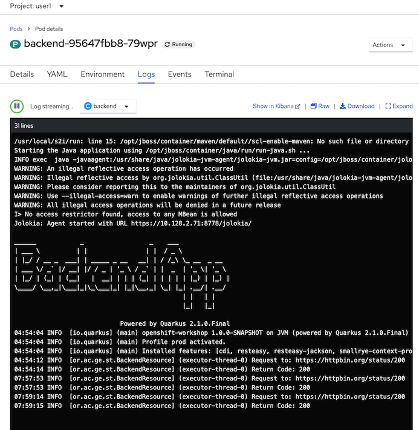
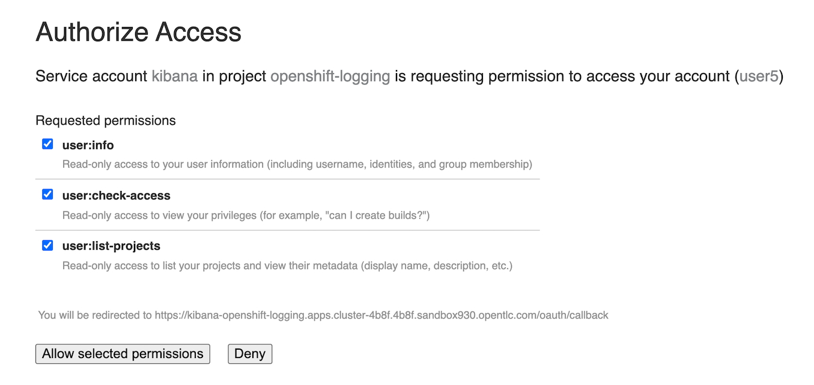
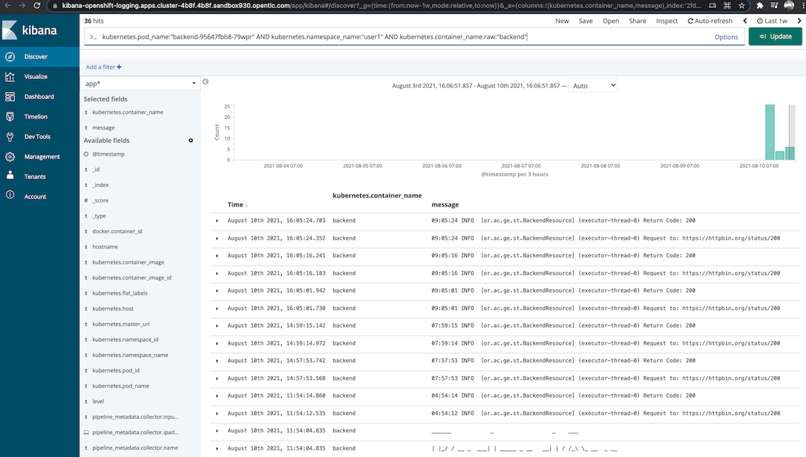

Viewing and working with logs generated by your application
Prerequisite
- Complete Deploy application to openshift with s2i
- Go to your project (same as your username)
- Open Web Terminal by click '>_' on top of OpenShift Web Console
- use web terminal to run command line
Review Application Code Logging
- Example code with logging (Quarkus Framework)
- Code URL: https://raw.githubusercontent.com/chatapazar/openshift-workshop/main/src/main/java/org/acme/getting/started/BackendResource.java
- Example Code Logging
import org.jboss.logging.Logger; ... private static final Logger logger = Logger.getLogger(BackendResource.class); ... URL url; try { logger.info("Request to: " + backend); ...
- example log property (Quarkus Framework)
- Properties URL: https://raw.githubusercontent.com/chatapazar/openshift-workshop/main/src/main/resources/application.properties
- Example properties:
#Logging quarkus.log.level=INFO # quarkus.log.category."com.example.quarkus".level=INFO # quarkus.log.category."com.example.quarkus.health".level=DEBUG quarkus.log.console.enable=true quarkus.log.console.format=%d{HH:mm:ss} %-5p [%c{2.}] (%t) %s%e%n quarkus.log.console.color=false %dev.quarkus.log.console.color=true
Monitor Container Log with Developer Console
- go to web terminal
- test call backend service
BACKEND_URL=https://$(oc get route backend -o jsonpath='{.spec.host}') curl $BACKEND_URL/backend - view log in pod, go to Topology, click Duke icon (backend), in backend deployment select Resources Tab, click 'View logs' of Pod
- in pod details, select Logs tab to view log of container 'backend' 
- re call backend service and check log in pod append (retry call 2-3 times for view logs append)
check log append at log terminalBACKEND_URL=https://$(oc get route backend -o jsonpath='{.spec.host}') curl $BACKEND_URL/backend - click raw icon to view log in another browser tab
- click download to download currnet log
Monitor Container Log with EFK Stack in Openshift
- From Logs tab in Pod details, click show in Kibana icon to open kibana in new tab
- Optional: for firstime, openshift will request you re-login and allow authorized to kibana (with oauth), click allow selected permissions 
- Openshift will Open Kibana from EFK Stack, default page is Discover and auto add filter with pod name, namespace/project and container name 
- Developer can custom filter to view log.
- For monitor more than 1 pod, developer can access kibana from logging menu on top of Developer Console (near web terminal menu icon)
- with this link, developer can custom filter to view log.